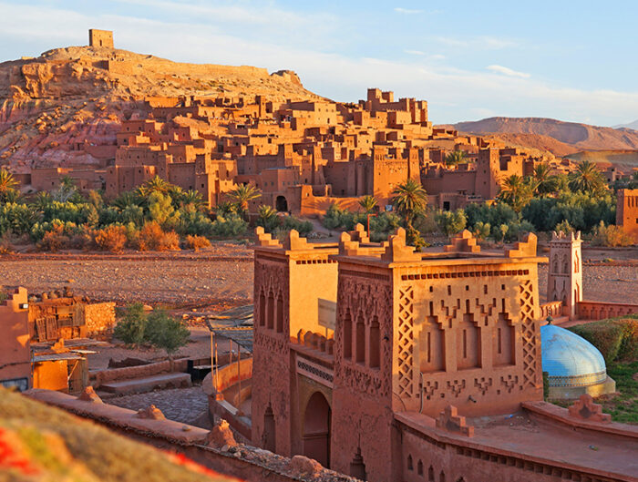
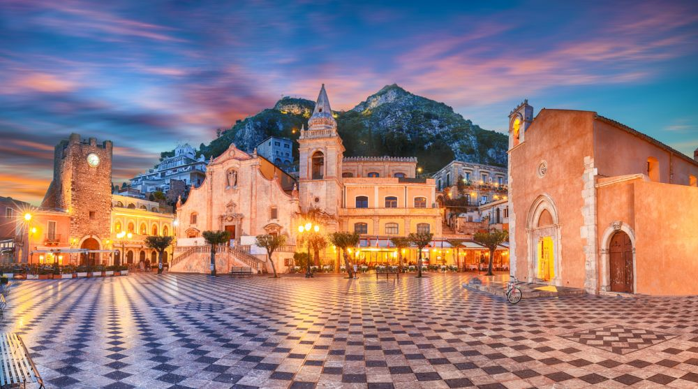
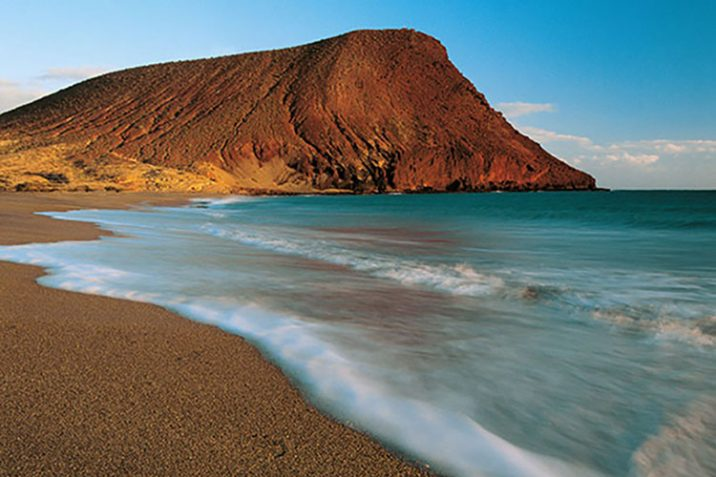

Tour del Marocco, un viaggio che vi rimarrà nel cuore per sempre.

Vi proponiamo un magnifico tour del Marocco, terra delle antiche tradizioni, dalla natura spettacolare e dalle atmosfere da mille e una notte. Il tour, grazie al quale potrete scoprire Marrakech, l'Alto Atlante, le gole di Todra e di Dades Ouarzazate, Ait Ben Haddou e il deserto di Merzouga, prevede pernottamenti in ottimi hotel(tutti cancellabili e con colazione inclusa) e noleggio dell'auto per muoversi in completa. Inoltre, compresi nel prezzo, anche i voli a/r dall'Italia(Roma, Milano, Torino, Napoli). Tantissime date disponibili in autunno, ottimo periodo per visitare il Paese alla grandissima.
Vacanza in Sicilia, bellissimo appartamento, compreso volo di anadata e ritorno da diverse località: 4 iorni a partire da soli 120€!

Oggi vi proponiamo un soggiorno low cost nella bellissima Sicilia. Abbiamo selezionato una favolosa struttura dove soggiornare in tutta tranquillità, sito a Marsala, a pochi passi dal mare e che dispone di una grande piscina esterna. Il prezzo è ottimo, ed è comprensivo di volo a/r a partire da diverse località, ovvero Milano, Roma e Bologna.
Tenerife, struttura e prezzi da urlo.

Cari viaggiatori, oggi vi portiamo a Tenerife con un'offerta davvero da prendere al volo. La struttura selezionata è un ottimo resort a 3 stelle fronte mare, situato a soli 4 minuti a piedi dalla spiaggia, valutato in mainera eccellente e che dispone di una bellissima piscina. Le opzioni di date disponibili sono diverse, nel periodo che va da giugno a dicembre. I voli a/r sono inclusi nel prezzo di 400 € a settimana e le località dalle quali sono previste le partenze sono Milano, Genova e Bari.